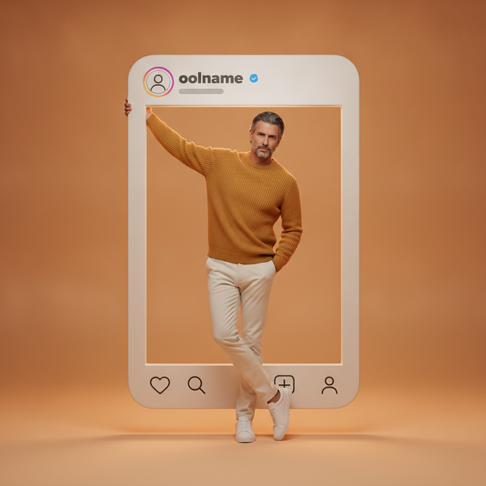

Summary of the session
What prompt engineering is, and why Level 1 begins here.
A generative AI tool does not read your mind. It reads your sentence. Two teachers can ask for the same lesson and receive completely different results, and the difference is almost never the tool — it is how the request was written. Prompt engineering is simply the habit of writing a request that carries enough information to be carried out.
This session gives you one frame — RCTF — and then uses it three times: on a lesson, on a picture you want to create, and on a picture you already have. It closes with a tour of the ChatGPT screen, so nothing on it is unfamiliar when you start Session 2.
What you will be able to do by the end
- Write in RCTFGive the AI a role, a context, a task and a format — every time.
- Repair a weak promptSpot what is missing in a one-line request and add it.
- Describe a picture in wordsWrite an image prompt precise enough to be reproduced.
- Read a prompt in reverseUpload any picture and ask the AI for the prompt that would recreate it.
- Work in Arabic or EnglishEvery prompt in this session is given in both languages.
- Use the ChatGPT screenChat, Work, Projects, Library, Scheduled, Plugins and Settings.
The rule that holds the level together: the AI writes the draft, you approve it. Nothing produced in this course reaches a class before a qualified teacher has read it and corrected it.
Part 1 · RCTF in one page
Four letters. Four questions. Ask them in order and the request writes itself.
| RCTF | English | العربية |
|---|---|---|
| R | Role — Who should the AI act as? | الدور — من تريد أن يكون الذكاء الاصطناعي؟ |
| C | Context — What must it know? | السياق — ما المعلومات التي يحتاج إلى معرفتها؟ |
| T | Task — What exactly must it do? | المهمة — ماذا يجب أن يفعل بالتحديد؟ |
| F | Format — How should the answer be delivered? | التنسيق — كيف تريد أن يقدم الإجابة؟ |
Why each letter earns its place
- Role sets the expertise and the register. "An experienced Grade 5 science teacher" produces different vocabulary from "a university lecturer".
- Context is the part teachers forget. Class size, lesson length, ability range, language support, available equipment — these are the constraints that make an answer usable in your room rather than in an ideal one.
- Task must contain a verb you can assess: explain, sequence, classify, compare, justify. "Make something about the water cycle" is not a task.
- Format decides whether you can use the answer immediately. A table with named columns can be printed; six paragraphs of prose have to be rewritten first.
Order matters less than presence. If all four are in the request, the AI will find them. If one is missing, the AI will invent it — and it will invent the one you cared about most.
Part 2 · From a weak prompt to a strong one
The same lesson, asked for twice. Copy each box and compare what comes back.
The weak prompt
الأمر الضعيف بالعربية
The strong RCTF prompt — English
The strong RCTF prompt — Arabic
What changed, line by line
- A grade and a profession appeared"Grade 5 science teacher and instructional designer" fixes both the reading level of the language and the professional structure of the plan.
- The real classroom appeared24 learners, 40 minutes, mixed ability, language support, no internet, groups of four. The AI can no longer propose a video or a one-to-one activity.
- The task became assessable"Explain and sequence" the four named stages. You can now look at a learner's work and decide whether the objective was met.
- The output became printableFive named columns and a three-item exit ticket. What comes back can go straight into your file — no rewriting.
Do this in the session: run both prompts in the same chat, one after the other, and read the two answers side by side. The gap between them is the whole subject of this session.
Part 3 · The same frame, applied to a picture
RCTF does not change when the output is an image. Only the four answers change.
| RCTF | For a picture, this means | في حالة الصورة |
|---|---|---|
| R | Role — the artist you are hiring: 3D scene designer, character artist, children's-book illustrator. | الدور — الفنان الذي توظفه: مصمم مشاهد ثلاثية الأبعاد، أو فنان شخصيات، أو رسام كتب أطفال. |
| C | Context — the world of the picture: the place, the objects in it, who the character is and what they are wearing. | السياق — عالم الصورة: المكان، والأشياء الموجودة فيه، ومن هي الشخصية وماذا ترتدي. |
| T | Task — the exact moment to draw, the pose, the lighting, and everything that must not appear. | المهمة — اللحظة المطلوب رسمها بدقة، والوضعية، والإضاءة، وكل ما يجب ألا يظهر. |
| F | Format — orientation, aspect ratio, camera angle, depth of field, style and resolution. | التنسيق — الاتجاه، ونسبة الأبعاد، وزاوية الكاميرا، وعمق المجال، والأسلوب، والدقة. |
Two habits that separate a usable image prompt from a wish: name what must not appear (text, logos, extra fingers, cropped feet), and describe the same character with the same words every time you mention them. Consistency in your wording is what produces consistency in the picture.
The worked example — the comic-book portal
Below is one complete RCTF image prompt, in English and in Arabic, followed by the picture it actually produced. Read the prompt first, then look at the picture and find each instruction in it.
Image prompt — English
Image prompt — Arabic
Now check the result against the prompt
This is the part teachers skip, and it is the part that teaches the most. Two instructions in the prompt above were not fully obeyed: the aspect ratio came back square rather than 4:5, and faint marks still appear inside the panels although the prompt forbade all text. An image tool weighs your words; it does not execute them like a computer program.
- Read the result against your own prompt, line by line, and mark what was ignored.
- Move the instruction that was ignored to the very start of the prompt and state it more forcefully.
- Set the aspect ratio in the tool's own settings when the tool offers them, rather than only in words.
- Never publish an AI picture to learners without reading it for anatomy, stray writing and anything culturally inappropriate.
Part 4 · Prompt in reverse
Start from a picture you admire, and let the AI hand you the prompt that would rebuild it.
Writing a picture prompt from an empty page is hard. Reading one out of a finished picture is much easier — and it is the fastest way to learn what a good image prompt contains. Upload any picture you like, ask for its prompt in the RCTF frame, and you receive a written model you can then edit for your own lesson.
The request you attach to the picture
Upload the picture with the plus button, then paste this line.
The reverse request — English
The reverse request — Arabic
The worked example — the social-media frame


The reverse-engineered prompt — English
The reverse-engineered prompt — Arabic
Why this exercise is worth the time: the reverse prompt is a model answer written by the machine. Compare it with the prompt you wrote yourself in Part 3 and you will see exactly which of the four parts you tend to leave thin.
Part 5 · Getting to know your ChatGPT screen
Two areas: the sidebar on the left, and the working area in the centre.
The left sidebar opens your chats, projects, files, schedules, plugins and settings. The centre of the screen is where you type your request and work with ChatGPT. Everything below is one item on that screen, in the order you meet it.
Chat or Work — the first choice you make
At the top of the screen you switch between Chat and Work. Chat is for quick conversations and simple tasks: asking a question, checking grammar, translating a passage, brainstorming, writing a short email, explaining a topic, drafting a simple prompt. Work is for a larger task that produces something you can use: a presentation, a lesson plan, a document or spreadsheet, an interactive activity, an analysis of several files, research, images, or a task that runs on a schedule. In Work you can follow the progress, answer its questions, add instructions and review the result.
| Chat | Work |
|---|---|
| Best for quick answers | Best for complete tasks |
| Usually gives a text response | Can create and edit files |
| Suitable for short requests | Suitable for multi-step work |
| You guide it message by message | It can work through several steps on its own |
| Example: “Correct this sentence.” | Example: “Create a complete lesson presentation.” |
A simple rule: use Chat when you need an answer. Use Work when you need a finished result.
The screen, part by part
This is your ChatGPT screen, rebuilt. Select any part of it to open the explanation, then find the same part on your own screen.
Pinned
Projects
Chats
What can I help with?
What you see may differ. The options on your own screen depend on your plan, your device and your organisation's settings. If something described here is not on your screen, it is not available to your account — not a mistake you have made.
Quick decision guide
- Need a quick explanation or rewrite? Use Chat.
- Need a presentation, worksheet or finished file? Use Work.
- Need the task to run later or regularly? Use Scheduled.
- Need access to Gmail, Drive, Canva or another service? Use Plugins.
- Need to organise continuing work and its files? Create a Project.
- Need to find something you created? Open Library.
- Need to change preferences, privacy or appearance? Open Settings.
Official guides: the ChatGPT help centre publishes its own pages for Work, scheduled tasks, plugins and projects. The links are in the cards below, and the exact options you see always depend on your plan and your organisation's settings.
Apps used in this session
Two AI assistants to test your prompts in, and the official guides behind Part 5.
ChatGPT
A conversational AI assistant from OpenAI. It answers questions, explains concepts, writes and summarises, translates, analyses files and images, and helps with planning and problem-solving. In this session you use it to test prompts and watch how clarity, context and structure change the answer.
https://chatgpt.com
Open ChatGPTGoogle Gemini
Google's generative AI assistant. It generates ideas, explains topics, prepares written drafts, summarises, plans tasks, and works with text, images and uploaded files. Use it to run the same prompt in a different system and compare the quality, style and structure of the two answers.
https://gemini.google.com
Open GeminiChatGPT help centre
The official pages behind Part 5: what Work is, how scheduled tasks are set up, how plugins are installed and what projects do. Read these when an option on your screen does not match the description here — features change, and plans differ.
https://learn.chatgpt.com/docs/get-started-with-work
Open the guidesOrder of use: read Part 1 and copy the two prompts in Part 2 into ChatGPT. Then run the image prompt in Part 3, upload your own picture for Part 4, and finish by opening ChatGPT with Part 5 beside you and finding each item on your own screen.